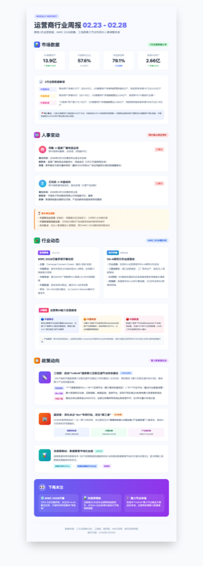
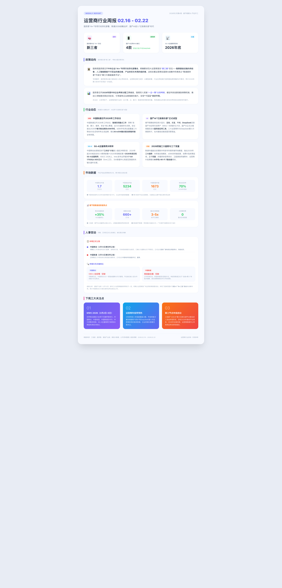

AI专项探索 · 工具产品化
运营商行业信息洞察
@芳姐
已上线运行
!
现状痛点
1
信息碎片化
运营商动态分散在 10+ 渠道（工信部、港交所、行业媒体、券商研报），人工收集耗时
4-6h/周
2
时效性差
人事变动、政策发布等关键信息滞后
3-5天
才获悉，错失业务响应窗口
3
缺乏结构化洞察
零散消息难以形成系统性行业认知，决策缺乏数据支撑
4
分发效率低
信息传递依赖口头/会议同步，覆盖面有限，团队认知不对齐
AI + CodeBuddy Skill 自动化解决
✓
AI 解决方案 & 实现价值
10min
单期生成耗时
vs 原4-6h, 提效 95%
4维
结构化信息覆盖
市场·人事·行业·政策
3渠道
一键多端分发
网页·邮件·图片
11人
稳定周活跃覆盖
部门核心成员全覆盖

最新一期 · 02.23-02.28
已连续产出 5 期
AI
联网搜索 + 智能聚合
|
CB
CodeBuddy Skill 自动化
|
GH
GitHub Pages 自动部署
|
✉
邮件一键群发
完整闭环：信息采集 → 报告生成 → 多渠道分发
AI专项探索 · 工具产品化
工作流程 & 效果展示
@芳姐
1
AI 自动化工作流
💬
一句指令触发
"生成本周运营商周报"
🔍
AI 联网采集
10+ 信源并行搜索
📄
模板化渲染
4维结构化HTML报告
🚀
多渠道分发
网页 + 邮件 + 图片
2
效率提升对比
BEFORE
人工方式
信息收集
4-6h
整理编写
2-3h
排版美化
1-2h
分发触达
0.5-1h
总计
8-12h/周
AFTER
AI 驱动
AI 联网搜索
3min
模板渲染
2min
人工校验调优
5min
自动部署 + 邮件
1min
总计
~10min/周
↓ 95%
3
后续迭代方向
🎯 智能化深挖
接入更多数据源，增加趋势分析、竞品对比等深度洞察模块
🔔 定时自动化
实现定时触发 + 自动发布，完全无人值守的全自动周报流水线
🚀 能力复用
沉淀为通用 Skill 模板，可快速复制到其他行业/领域的信息洞察场景
azuretanfang.github.io/weekly-report

第2周 02.04-02.11
第3周 02.11-02.15
第4周 02.16-02.22
第5周 02.23-02.28 ✓
已累计产出 5 期 · GitHub Pages 在线归档